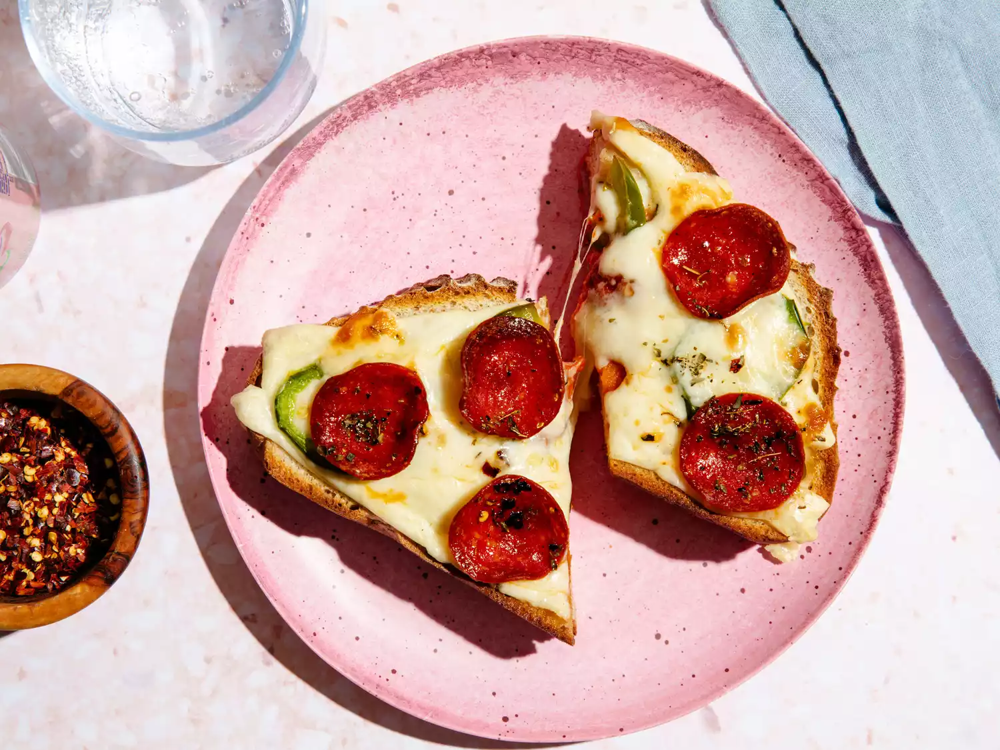

Pizza Lava Toast

Description
A simple toast covered with melty cheese toppings has been making the rounds on social media, but it's not just a slice of bread with some cheese melted on top. To give this toast the "lava" in its name, you actually stack two pieces of toast together to make a combination of grilled cheese and pizza toast.
We made our recipe using the oven, but if you have a toaster oven, use that to make this even easier and faster!
Ingredients:
- 2 teaspoons butter
- 2 slices sourdough bread
- 1 ½ ounces sliced mozzarella cheese, divided
- 1/2 ounce sliced pepper jack cheese
- 5 slices pickled jalapeno
- 5 slices pepperoni
- 1 tablespoon pizza sauce
- 1/4 teaspoon italian seasoning, divided
Steps:
- Preheat oven to 375°F.
- Line a sheet pan with parchment paper.
- Spread butter on both sides of each slice of bread and place on the prepared pan.
- Bake, flipping once halfway through, until bread is lightly browned on both sides, about 8 minutes.
- Cover the perimeter of one bread slice with half of the mozzarella cheese.
- Top with other slice of bread.